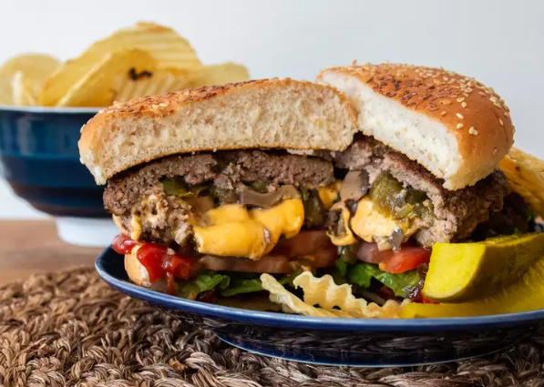

Stuffed Burgers

Perfect dish when you don't know what to cook!
Ingriedents
- 200g Ground Beef
- Bottle steak sauce
- 2 tablespoons fajita seasoning
- 2 tablespoons dried minced onion
- 8 slices cheese
- 2 cans chopped green chiles, drained
- 1 (4 ounce) can sliced mushrooms, drained
Steps
- In a medium bowl mix together the ground beef, 1/4 cup of the steak sauce, fajita
seasoning, and dried onion until well blended. Form the mixture into 8 patties. Set aside 4 of the patties.
On the other 4 patties, place one slice of cheese, some of the green chilies, and some mushrooms. Place the
other 4 patties over the top, press down, and seal the edges so the goodies do not escape.
- Score the fish. If the fish counter did not already do this for you, use a knife to cut
slits about an inch
apart across the top of the fish. They do not need to be super-deep — just enough to cut through the skin.
- Preheat an outdoor grill for low heat. Lightly oil grate.
- Place patties on the grill ,and let them brown on both sides. Once they begin to brown,
brush the tops with remaining steak sauce. Continue to grill for about 30 minutes, basting frequently with
steak sauce, until meat is no longer pink, and the juices run clear. When the meat is ready to come off the
grill, place the remaining 4 slices of cheese over the tops of the patties. Serve on buns, or just by
themselves.
Then that’s it! Your Burger party is officially on